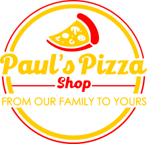

Pizza With Paul

I'm here to show you how to make delicious sourdough pizzas right at home.
It all starts with sourdough.
Sourdough is made from an active yeast colony. You can create a starter yourself using from any high quality flour.
Once you have an active, bubbly starter, it's time to get ready to make some pizza dough!
- Every pizza is only as good as it's sauce, click here for
the easiest sauce recipe out there.
- And click here for Paul's Sourdough Pizza Dough Recipe